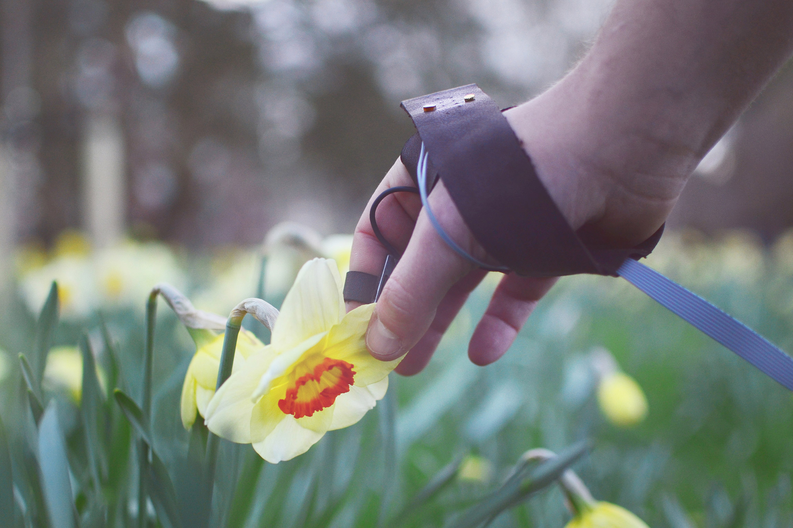
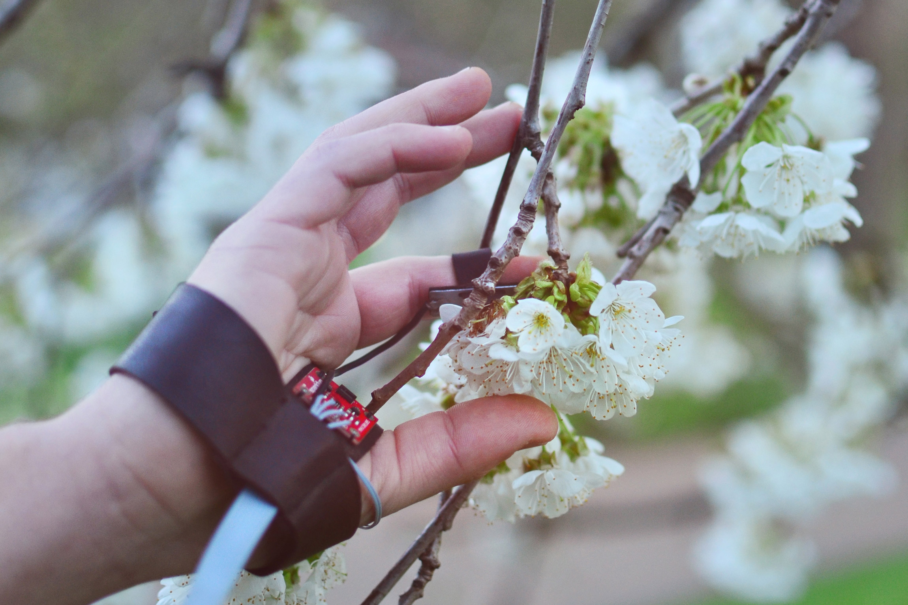
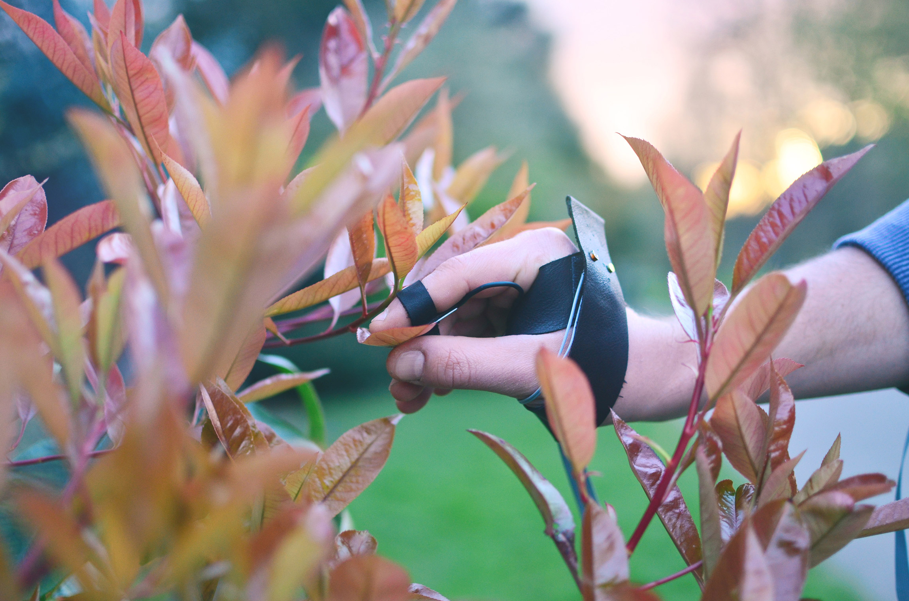

_
Synthplant is a synthesiser instrument that enables you to interact with nature in order to create beautiful soundscapes.
Instead of pulling strings, hitting drums or playing keys, touching and stroking plants with your fingers creates sound.
Based on its unique attributes, every plant sounds differently. This allows you to explore and experience nature around you in an exciting and emotional way.
Strap Synthplant on your hand, connect it to your phone and plug in your headphones. Dive into a complex sound world, under your control, together with nature.



Two month project at the RCA, Design Products / Marcel Mueller